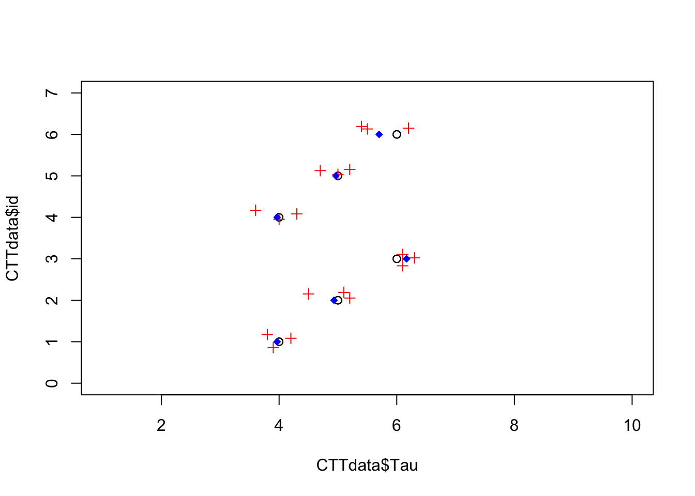

Chapter 1 Classic Test Theory
1.1 Classical True Score Model
The true score model is: \[ X = T + E \] where \(X\) is the observed score, \(T\) is the true score, which is unknown, and \(E\) is the error
To demonstrate this let’s assume we have the following data,
source("code/simulate_CTTdata.R")
CTTdata id time x1 x2 x3 x4 x5 x6 x7 x8 x9 x10 Tau
1 1 1 3 6 5 3 5 5 4 5 3 3 4
2 1 2 6 3 5 3 4 2 4 4 3 5 4
3 1 3 4 4 2 4 4 3 5 3 4 5 4
4 2 1 3 6 8 6 5 4 5 5 5 5 5
5 2 2 6 4 6 6 4 6 6 5 4 4 5
6 2 3 4 6 6 5 5 5 1 3 6 4 5
7 3 1 6 5 6 6 6 6 9 6 6 5 6
8 3 2 6 6 6 7 5 6 6 6 6 7 6
9 3 3 6 5 8 6 6 6 7 7 5 7 6
10 4 1 4 3 5 4 2 3 3 5 5 2 4
11 4 2 4 5 5 4 5 5 3 5 3 4 4
12 4 3 2 4 4 4 6 4 3 4 5 4 4
13 5 1 5 6 5 4 5 5 5 6 5 6 5
14 5 2 6 6 4 6 4 5 4 5 5 5 5
15 5 3 6 4 5 4 5 5 4 4 5 5 5
16 6 1 6 6 7 8 6 6 7 6 6 4 6
17 6 2 4 5 7 5 5 7 4 5 6 7 6
18 6 3 5 6 6 6 4 5 4 5 7 6 6where id is a variable indicating individual test-takers, time indicated which of 3 times each individual was assessed, x1 - x10 are the scores on 10 items that comprise the test, and Tau is the true value of the individuals ability.
I use Tau here instead of T, because T is a protected symbol in R which is short-hand for TRUE.
Note that we would not know Tau in most situations, but because this is simulated data we will pretend we do.
We can create a composite score for the ten items for each individual on each occasion by averaging columns 3 through 12.
CTTdata$X <- rowMeans(CTTdata[ ,3:12])And we can also create E, the error with:
CTTdata$E <- CTTdata$X - CTTdata$TauAgain, in practice we would not be able to directly compute E because we would not know Tau, but we will use it to build an understanding of what error is.
Now we have:
CTTdata id time x1 x2 x3 x4 x5 x6 x7 x8 x9 x10 Tau X E
1 1 1 3 6 5 3 5 5 4 5 3 3 4 4.2 0.2
2 1 2 6 3 5 3 4 2 4 4 3 5 4 3.9 -0.1
3 1 3 4 4 2 4 4 3 5 3 4 5 4 3.8 -0.2
4 2 1 3 6 8 6 5 4 5 5 5 5 5 5.2 0.2
5 2 2 6 4 6 6 4 6 6 5 4 4 5 5.1 0.1
6 2 3 4 6 6 5 5 5 1 3 6 4 5 4.5 -0.5
7 3 1 6 5 6 6 6 6 9 6 6 5 6 6.1 0.1
8 3 2 6 6 6 7 5 6 6 6 6 7 6 6.1 0.1
9 3 3 6 5 8 6 6 6 7 7 5 7 6 6.3 0.3
10 4 1 4 3 5 4 2 3 3 5 5 2 4 3.6 -0.4
11 4 2 4 5 5 4 5 5 3 5 3 4 4 4.3 0.3
12 4 3 2 4 4 4 6 4 3 4 5 4 4 4.0 0.0
13 5 1 5 6 5 4 5 5 5 6 5 6 5 5.2 0.2
14 5 2 6 6 4 6 4 5 4 5 5 5 5 5.0 0.0
15 5 3 6 4 5 4 5 5 4 4 5 5 5 4.7 -0.3
16 6 1 6 6 7 8 6 6 7 6 6 4 6 6.2 0.2
17 6 2 4 5 7 5 5 7 4 5 6 7 6 5.5 -0.5
18 6 3 5 6 6 6 4 5 4 5 7 6 6 5.4 -0.6Look over the last three columns and make sure you understand their relation.
For example, in the first row, note that X is .2 points above Tau, which is exactly the value of E we computed (\(X_1 - T_1 = E_1 = 4.2 - 4 = .2\)).
The 1 subscript in the previous expression indicated row 1 (i.e. i = 1).
CTTdata$X_t <- round(ave(CTTdata$X, CTTdata$id, FUN = mean),1)CTTdata id time x1 x2 x3 x4 x5 x6 x7 x8 x9 x10 Tau X E X_t
1 1 1 3 6 5 3 5 5 4 5 3 3 4 4.2 0.2 4.0
2 1 2 6 3 5 3 4 2 4 4 3 5 4 3.9 -0.1 4.0
3 1 3 4 4 2 4 4 3 5 3 4 5 4 3.8 -0.2 4.0
4 2 1 3 6 8 6 5 4 5 5 5 5 5 5.2 0.2 4.9
5 2 2 6 4 6 6 4 6 6 5 4 4 5 5.1 0.1 4.9
6 2 3 4 6 6 5 5 5 1 3 6 4 5 4.5 -0.5 4.9
7 3 1 6 5 6 6 6 6 9 6 6 5 6 6.1 0.1 6.2
8 3 2 6 6 6 7 5 6 6 6 6 7 6 6.1 0.1 6.2
9 3 3 6 5 8 6 6 6 7 7 5 7 6 6.3 0.3 6.2
10 4 1 4 3 5 4 2 3 3 5 5 2 4 3.6 -0.4 4.0
11 4 2 4 5 5 4 5 5 3 5 3 4 4 4.3 0.3 4.0
12 4 3 2 4 4 4 6 4 3 4 5 4 4 4.0 0.0 4.0
13 5 1 5 6 5 4 5 5 5 6 5 6 5 5.2 0.2 5.0
14 5 2 6 6 4 6 4 5 4 5 5 5 5 5.0 0.0 5.0
15 5 3 6 4 5 4 5 5 4 4 5 5 5 4.7 -0.3 5.0
16 6 1 6 6 7 8 6 6 7 6 6 4 6 6.2 0.2 5.7
17 6 2 4 5 7 5 5 7 4 5 6 7 6 5.5 -0.5 5.7
18 6 3 5 6 6 6 4 5 4 5 7 6 6 5.4 -0.6 5.71.2 Reliability
\[ \text{reliability} = \frac{\sigma^2_T}{\sigma^2_X} = \frac{\sigma^2_T}{\sigma^2_T + \sigma^2_E} = \rho^2_{XT} \]
Tau <- CTTdata$Tau
X <- CTTdata$X
E <- CTTdata$X - CTTdata$Tauvar(Tau)/var(X)[1] 0.9170806var(Tau)/(var(Tau) + var(E))[1] 0.8898776cor(Tau, X)^2[1] 0.886766plot(x = CTTdata$Tau, y = CTTdata$id, xlim = c(1,10),
ylim = c(0,7))
points(x = CTTdata$X, y = jitter(CTTdata$id), pch = 3, col = "red")
points(x = ave(x = CTTdata$X, factor(CTTdata$id), FUN = mean), y = CTTdata$id,
col = "blue", pch = 18)
# points(x = CTTdata$X_t, pch = 2, factor(CTTdata$id))1.2.1 Cronbach’s \(\alpha\)
In the notes for this chapter, I demonstrate aspects of classical test theory, reliability and generalizability theory using data from a study exploring the motivation of R package authors (Mair et al. 2015). This tutorial is based on Chapter 1 of Mair (2018), which can be consulted for a more in depth exposition of the underlying theory. Here I focus on demonstrating some of those concepts in R, as well as describing how to get certain results in R.
First, I load the packages used in this tutorial:
# Packages used:
library(psych)
library(MPsychoR)Next, I load the full data set from the MPsychoR package (Mair 2020), then as in the chapter, I subset the data to only include hybrid motivation items, followed by removing rows with missing values.
data("Rmotivation")
# Create data frame with only Hybrid Motivation items.
HybMot <- subset(Rmotivation,
select = grep("hyb", names(Rmotivation)))
# Remove rows with any missing data.
HybMot <- na.omit(HybMot)This leads to a data set with 777 authors and 19 items.
# How many authors(rows) and items(columns)?
dim(HybMot)[1] 777 19# Note they are all dichotomous items.
head(HybMot) hyb1 hyb2 hyb3 hyb4 hyb5 hyb6 hyb7 hyb8 hyb9 hyb10 hyb11 hyb12 hyb13 hyb14
1 1 0 1 0 1 1 0 0 0 1 1 1 1 0
3 0 0 1 0 1 0 0 0 0 1 0 1 1 0
4 1 1 1 1 1 0 1 0 0 1 0 1 1 0
5 1 0 0 1 1 0 0 0 0 1 1 1 1 0
8 1 1 1 1 1 1 1 1 1 1 0 1 1 1
9 1 0 0 1 1 0 0 0 0 1 0 0 1 0
hyb15 hyb16 hyb17 hyb18 hyb19
1 1 1 1 1 1
3 1 0 0 1 0
4 0 1 1 1 1
5 1 0 1 1 1
8 1 1 1 1 1
9 0 1 1 1 1# Variance/Covariance Matrix
vcmat <- cov(HybMot)
scroll_box(kable(vcmat, digits = 2), width = "100%")| hyb1 | hyb2 | hyb3 | hyb4 | hyb5 | hyb6 | hyb7 | hyb8 | hyb9 | hyb10 | hyb11 | hyb12 | hyb13 | hyb14 | hyb15 | hyb16 | hyb17 | hyb18 | hyb19 | |
|---|---|---|---|---|---|---|---|---|---|---|---|---|---|---|---|---|---|---|---|
| hyb1 | 0.18 | 0.06 | 0.04 | 0.03 | 0.03 | 0.05 | 0.01 | 0.05 | 0.04 | 0.04 | 0.03 | 0.03 | 0.03 | 0.03 | 0.04 | 0.05 | 0.04 | 0.03 | 0.06 |
| hyb2 | 0.06 | 0.25 | 0.06 | 0.05 | 0.03 | 0.05 | -0.01 | 0.04 | 0.05 | 0.02 | 0.04 | 0.04 | 0.03 | 0.03 | 0.03 | 0.03 | 0.01 | 0.00 | 0.03 |
| hyb3 | 0.04 | 0.06 | 0.23 | 0.13 | 0.03 | 0.05 | 0.00 | 0.03 | 0.05 | 0.04 | 0.05 | 0.06 | 0.02 | 0.02 | 0.06 | 0.02 | 0.03 | 0.02 | 0.04 |
| hyb4 | 0.03 | 0.05 | 0.13 | 0.21 | 0.03 | 0.04 | 0.01 | 0.03 | 0.04 | 0.03 | 0.05 | 0.05 | 0.02 | 0.02 | 0.04 | 0.02 | 0.03 | 0.02 | 0.04 |
| hyb5 | 0.03 | 0.03 | 0.03 | 0.03 | 0.11 | 0.02 | 0.00 | 0.01 | 0.01 | 0.03 | 0.03 | 0.03 | 0.03 | 0.02 | 0.04 | 0.02 | 0.02 | 0.01 | 0.03 |
| hyb6 | 0.05 | 0.05 | 0.05 | 0.04 | 0.02 | 0.24 | 0.01 | 0.11 | 0.15 | 0.05 | 0.06 | 0.06 | 0.02 | 0.07 | 0.06 | 0.05 | 0.05 | 0.02 | 0.07 |
| hyb7 | 0.01 | -0.01 | 0.00 | 0.01 | 0.00 | 0.01 | 0.22 | 0.04 | 0.01 | 0.03 | 0.00 | 0.02 | 0.00 | 0.00 | 0.01 | 0.02 | 0.02 | 0.01 | 0.02 |
| hyb8 | 0.05 | 0.04 | 0.03 | 0.03 | 0.01 | 0.11 | 0.04 | 0.25 | 0.10 | 0.06 | 0.05 | 0.06 | 0.02 | 0.04 | 0.06 | 0.05 | 0.05 | 0.03 | 0.06 |
| hyb9 | 0.04 | 0.05 | 0.05 | 0.04 | 0.01 | 0.15 | 0.01 | 0.10 | 0.20 | 0.04 | 0.04 | 0.05 | 0.01 | 0.05 | 0.04 | 0.04 | 0.03 | 0.01 | 0.05 |
| hyb10 | 0.04 | 0.02 | 0.04 | 0.03 | 0.03 | 0.05 | 0.03 | 0.06 | 0.04 | 0.15 | 0.03 | 0.06 | 0.03 | 0.02 | 0.04 | 0.04 | 0.04 | 0.03 | 0.05 |
| hyb11 | 0.03 | 0.04 | 0.05 | 0.05 | 0.03 | 0.06 | 0.00 | 0.05 | 0.04 | 0.03 | 0.23 | 0.10 | 0.03 | 0.04 | 0.10 | 0.03 | 0.03 | 0.01 | 0.02 |
| hyb12 | 0.03 | 0.04 | 0.06 | 0.05 | 0.03 | 0.06 | 0.02 | 0.06 | 0.05 | 0.06 | 0.10 | 0.23 | 0.04 | 0.03 | 0.11 | 0.04 | 0.03 | 0.02 | 0.04 |
| hyb13 | 0.03 | 0.03 | 0.02 | 0.02 | 0.03 | 0.02 | 0.00 | 0.02 | 0.01 | 0.03 | 0.03 | 0.04 | 0.10 | 0.01 | 0.03 | 0.03 | 0.02 | 0.01 | 0.02 |
| hyb14 | 0.03 | 0.03 | 0.02 | 0.02 | 0.02 | 0.07 | 0.00 | 0.04 | 0.05 | 0.02 | 0.04 | 0.03 | 0.01 | 0.20 | 0.03 | 0.04 | 0.03 | 0.01 | 0.04 |
| hyb15 | 0.04 | 0.03 | 0.06 | 0.04 | 0.04 | 0.06 | 0.01 | 0.06 | 0.04 | 0.04 | 0.10 | 0.11 | 0.03 | 0.03 | 0.23 | 0.03 | 0.03 | 0.02 | 0.04 |
| hyb16 | 0.05 | 0.03 | 0.02 | 0.02 | 0.02 | 0.05 | 0.02 | 0.05 | 0.04 | 0.04 | 0.03 | 0.04 | 0.03 | 0.04 | 0.03 | 0.17 | 0.06 | 0.05 | 0.07 |
| hyb17 | 0.04 | 0.01 | 0.03 | 0.03 | 0.02 | 0.05 | 0.02 | 0.05 | 0.03 | 0.04 | 0.03 | 0.03 | 0.02 | 0.03 | 0.03 | 0.06 | 0.14 | 0.04 | 0.07 |
| hyb18 | 0.03 | 0.00 | 0.02 | 0.02 | 0.01 | 0.02 | 0.01 | 0.03 | 0.01 | 0.03 | 0.01 | 0.02 | 0.01 | 0.01 | 0.02 | 0.05 | 0.04 | 0.08 | 0.05 |
| hyb19 | 0.06 | 0.03 | 0.04 | 0.04 | 0.03 | 0.07 | 0.02 | 0.06 | 0.05 | 0.05 | 0.02 | 0.04 | 0.02 | 0.04 | 0.04 | 0.07 | 0.07 | 0.05 | 0.21 |
k <- ncol(HybMot)
sigma2_Xi <- tr(vcmat) # trace of matrix or sum(diag(vmat))
sigma2_X <- sum(vcmat)1.2.2 Other Reliability Coefficients
1.3 Generalizability Theory
Generalizability theory, or G-theory for short, is an extension of CTT, which decomposes the one error term in CTT into multiple sources of error called facets. These could include sources such as items, raters, or measurement occasions. These were each given a subscript on page 2 of the text.
Before looking at these different sources of error, let’s calculate Cronbach’s \(\alpha\) in a different way, that will allow this decomposition going forward.
We will first need to reshape the data from wide to long format.
A great tutorial on reshaping data with the reshape2 package can be found here:
https://seananderson.ca/2013/10/19/reshape/
Basically, we need to transform the data so that instead of each item being in a separate column are reshaped so there is one column with the cell values, and one column that identifies which item the score is from.
library("reshape2")
# Add person variable
Hyb1 <- data.frame(HybMot, person = 1:nrow(HybMot))
Hyblong <- melt(Hyb1, id.vars = c("person"), variable.name = "item")
Hyblong$person <- as.factor(Hyblong$person)1.3.1 Reliability and Generalizability
summary(aov(value ~ person + item, data = Hyblong)) Df Sum Sq Mean Sq F value Pr(>F)
person 776 663.0 0.85 5.549 <2e-16 ***
item 18 573.8 31.88 207.048 <2e-16 ***
Residuals 13968 2150.5 0.15
---
Signif. codes: 0 '***' 0.001 '**' 0.01 '*' 0.05 '.' 0.1 ' ' 1From this output we can calculate Cronbach’s \(\alpha\) with the following values:
MSp <- 0.85
MSe <- 0.15
alpha <- (MSp - MSe)/MSp
print(alpha, digits = 2)[1] 0.82ICC(HybMot)Call: ICC(x = HybMot)
Intraclass correlation coefficients
type ICC F df1 df2 p lower bound
Single_raters_absolute ICC1 0.15 4.4 776 13986 7.2e-279 0.14
Single_random_raters ICC2 0.16 5.5 776 13968 0.0e+00 0.14
Single_fixed_raters ICC3 0.19 5.5 776 13968 0.0e+00 0.18
Average_raters_absolute ICC1k 0.77 4.4 776 13986 7.2e-279 0.75
Average_random_raters ICC2k 0.78 5.5 776 13968 0.0e+00 0.75
Average_fixed_raters ICC3k 0.82 5.5 776 13968 0.0e+00 0.80
upper bound
Single_raters_absolute 0.17
Single_random_raters 0.18
Single_fixed_raters 0.21
Average_raters_absolute 0.79
Average_random_raters 0.81
Average_fixed_raters 0.83
Number of subjects = 777 Number of Judges = 19icchyb <- ICC(HybMot)
sqrt((0.85-0.15)/19)[1] 0.191943sqrt((31.88-0.15)/777)[1] 0.2020806library("lme4")Loading required package: MatrixVarCorr(lmer(value ~ (1|person) + (1|item), data = Hyblong)) Groups Name Std.Dev.
person (Intercept) 0.19200
item (Intercept) 0.20206
Residual 0.39238 library("gtheory")
gfit <- gstudy(data = Hyblong, formula = value ~ (1|person) + (1|item))
dfit <- dstudy(gfit, colname.objects = "person", colname.scores = "value",
data = Hyblong)
round(dfit$generalizability, 3)[1] 0.821.3.2 Multiple Sources of Error
Generalizability theory acknowledges that multiple sources of error can impact scores simultaneously, and allow for estimating the effects of each (Raykov and Marcoulides 2011). These various sources of error, or facets (e.g., items, raters, measurement occasions). All measurements of behavior are conceptualized as being sampled from a universe of admissible observations (Raykov and Marcoulides 2011). If the observed score is expected to vary across a facet (e.g. vary across occasions, or vary depending on the items included, or the rater scoring), then that facet is a defining characteristic of the universe. The idea of reliability is replace with the idea of generalizability, which ,instead of asking how accurately observed scores can reflect the true score (CTT), generalizability theory asks how accurately observed scores allow us to generalize about behavior of an individual in a particular universe.
Below is the code from the Mair (2018) text.
library(gtheory)
data("Lakes")
phydat <- subset(Lakes, subtest == "physical")
phydat$item <- droplevels(phydat$item)
head(phydat) personID raterID item score subtest
12611 1 7 phy1 5 physical
12612 1 1 phy1 5 physical
12613 1 3 phy1 5 physical
12614 1 8 phy1 4 physical
12615 1 5 phy1 6 physical
12616 2 3 phy1 5 physicalformula <- score ~ (1|personID) + (1|raterID) + (1|item) +
(1|personID:raterID) + (1|personID:item) + (1|raterID:item)
gfit <- gstudy(formula = formula, data = phydat)
gfit$components
source var percent n
1 personID:raterID 0.127298630 10.7 1
2 personID:item 0.151229568 12.7 1
3 personID 0.458766113 38.5 1
4 raterID:item 0.008802081 0.7 1
5 raterID 0.139048763 11.7 1
6 item 0.033388424 2.8 1
7 Residual 0.272703419 22.9 1
attr(,"class")
[1] "gstudy" "list" dfit <- dstudy(gfit, colname.objects = "personID", colname.scores = "score",
data = phydat)
dfit$components source var percent n
1 personID:raterID 0.0254597259 4.3 5
2 personID:item 0.0504098560 8.5 3
3 personID 0.4587661131 77.4 1
4 raterID:item 0.0005868054 0.1 15
5 raterID 0.0278097526 4.7 5
6 item 0.0111294746 1.9 3
7 Residual 0.0181802279 3.1 15dfit$var.error.abs[1] 0.1335758dfit$sem.abs[1] 0.3654803dfit$var.error.rel[1] 0.09404981dfit$sem.rel[1] 0.3066754dfit$dependability[1] 0.7744954dfit$generalizability[1] 0.82987141.4 Additional Readings
For more information of G theory, see Raykov and Marcoulides (2011).
For an example using the R package lavaan with G theory, see Jorgensen (2021).